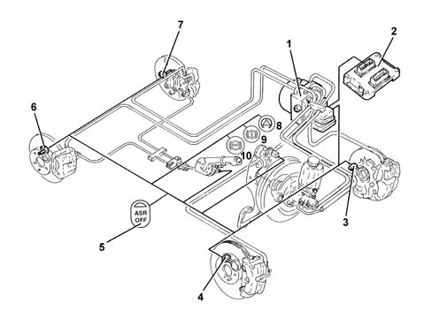
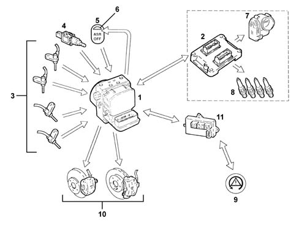
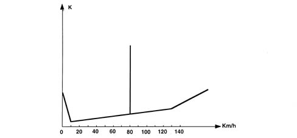
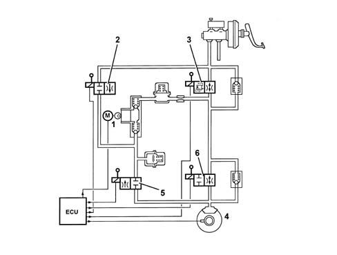
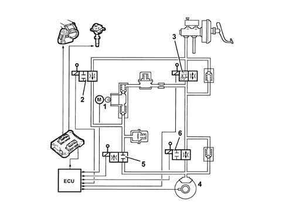
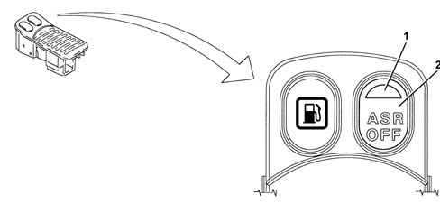

3350A ANTI - SPIN REGULATION DEVICES
- Path
- Descriptions > 33 BRAKING SYSTEM > 3350 DRIVE CONTROL > 3350A ANTI - SPIN REGULATION DEVICES
- Kind
- system description
- Applies to
- all engines; all production periods
- Interactive page
- https://sloeber94.github.io/elrnDB-aGt/en/#/125000357
Applies to: all engines; all production periods
CONSTRUCTION SPECIFICATIONS
VIEW OF ASSEMBLY

1 - ABS/ASR/VDC control unit
2 - Engine management control unit
3 - Left front sensor
4 - Right front sensor
5 - ASR off button
6 - Right rear sensor
7 - Left rear sensor
8 - ASR/VDC warning light
9 - EBD warning light
10 - ABS warning light
SPECIFICATIONS
Function
This system, in addition to the normal anti-lock and brake distribution functions controlled by the ABS 5.7 with EBD, also carries out the following functions:
- acceleration slipping adjustment (A.S.R.)
- adjustment of the engine braking torque (M.S.R.)
- locking the differential through action on the brakes (T.C.).
These functions are carried out through action on the drive torque and the application of a braking force on one or both the drive wheels.
If, during acceleration, one or both the drive wheels tend to slip, the ABS control unit asks the engine management control unit to reduce the torque transmitted to the wheels and, almost at the same time, without any intervention by the user, brakes the wheel or wheels.
If, in the case of strong deceleration, the wheels tend to lock, the ABS control unit requests the engine management control unit to adjust the engine braking torque in order to prevent the instability of the vehicle.
The system can be excluded by activating the button in the centre console.
The LED in the button comes on and the message is shown in the DOT matrix display in the instrument panel signalling that the ASR/MSR system has been switched off.
The warning light in the button coming on and the repetition on the DOT matrix indicates that the system has been switched off due to a fault recorded by the control unit
The intervention of the ASR/MSR is signalled by the flashing of the warning light in the instrument panel.
Each time the vehicle is started up the ASR/MSR function is activated even if the function was switched off when the vehicle was switched off.
Composition
Structure
The system consists of:
- a specific electronic control unit integrated with the electro-hydraulic control unit
- an electro-hydraulic control unit that modulates the pressure acting on the brakes, independently of the action by the user, by means of twelve solenoid valves
- four ACTIVE type sensors
- specific wiring.
OPERATION
Operating principles
General remarks
The system works through signals coming from the active sensors, the brake lights switch and the ASR on/off button.
It continuously compares the speed of the wheels on the same side of the vehicle (right front with right rear and left front with left rear) and when it detects a difference in speed between the two wheels on the same side of more than 2-6 km/h (intervention threshold) it intervenes with the ASR logic, whilst if in deceleration conditions the control unit detects an excessive difference between the front axle and the rear axle because the front wheels tend to slow down more compared with the rear wheels, the control unit will intervene with the MSR logic.
The ABS/ASR control unit converses continuously with the engine management control unit via the C-CAN line.
The ASR function is activated in all vehicle speed conditions, however, the intervention of the brakes is excluded above 80 km/h.

1 - A.B.S./A.S.R. control unit
2 - Engine management control unit
3 - (Active) wheel rpm sensors
4 - Brake pedal switch
5 - A.S.R. on/off button
6 - A.S.R. on/off LED
7 - Motorized throttle body
8 - Ignition system (advance variation)
9 - ASR/VDC warning light in instrument panel
10 - Brake caliper
11 - Body Computer
Operating strategies
Slipping of the drive wheels
Intervention - intervention times for good road grip conditions (asphalt)
Engine torque reduction by the engine management control unit through the alteration of the ignition advances, 6/100 of a second after the slipping limit is exceeded.
A further reduction in torque through a decrease in the throttle opening (by the engine management control unit through the motorized throttle body after 15/100 of a second).
Intervention of the hydraulic system (braking force on the drive wheels) after 2/10 of a second.
Operation in poor grip conditions
The system is capable of recognizing these conditions by comparing the acceleration of the drive wheels with the torque transmitted by the engine (engine load from the engine management control unit).
The system behaves in the same way as for both drive wheels slipping in good road grip conditions (asphalt) and the intervention levels are at the lower limit.
Slipping of one drive wheel only
Intervention-intervention times
Torque reduction by the engine management control unit through the alteration of the ignition advances, 6/100 of a second after the slipping limit is exceeded.
A further reduction in torque through a decrease in the throttle opening (by the engine management control unit through the motorized throttle body after 15/100 of a second).
Intervention of the hydraulic system, a braking action exerted on the wheel that it slipping to guarantee a resistive force on the side with poor grip (T.C.).
This resistive force allows the differential to transmit an equal torque with good grip.
Slipping of one wheel round bends in good grip conditions (asphalt)
The system recognizes the bend from the speed of the rear wheels (driven).
It implements the same operating mode described for the "Slipping of one drive wheel only" condition, the intervention levels are at the upper limit. The torque reduction is applied gently.
Slipping of one wheel round bends in poor grip conditions (snow, ice)
The system implements the same operating mode described for the "Slipping of one drive wheel only" condition with the intervention levels at the lower limit. The torque reduction is accentuated (to ensure good side road holding).
Adjustment of engine braking torque during deceleration
Vehicle instability during deceleration in poor grip conditions
The system recognizes this condition from the engine load, from the speed of the front and rear wheels and from the brake pedal sensor. In this case there is an increase in drive torque through the intervention of the engine management control unit opeing the motorized throttel to overcome the natural instability of the vehicle due to the engine braking torque in poor grip conditions.
Exclusion of asr/msr system
If the system is excluded using the button in the centre console, which is advisable when the vehicle is travelling over difficult surfaces (e.g. snow, ice, deep mud, sand or gravel) or when snow chains are fitted on the drive wheels, the ABS and EBD functions remain activated.
Intervention levels
The different intervention levels between 2 and 6 km/h depend on environmental factors; some of the conditions have been described in the operating logics, others are:
- high acceleration level
- vehicle speed (see graph) type of tyres (normal or winter); with winter tyres and good grip, high intervention levels, e.g. with winter tyres and poor grip, low intervention levels. The system is capable of recognizing these conditions by comparing the acceleration of the drive wheels with the torque transmitted by the engine (engine load from the engine management control unit).

K - Slipping level
Asr/msr system failure
If there is a fault in the ABS, the ASR is also disabled. The following problems result in the ASR system only being excluded:
- engine C-CAN message errors
- C-CAN bus error.
When these problems occur, the control unit activates the warning lights in the instrument panel and in the button.
The ASR warning lights logic is:
- with the ASR on, the warning light in the instrument panel is off and the LED in button is off
- with the ASR operating, the warning light in the instrument panel is intermittent and the LED in the button is off
- with the ASR switched off, the warning light in the instrument panel is on, the warning light in the button is on and there is an ASR not on message in the DOT matrix display
- with the ASR faulty, the warning lights in the instrument panel and the button are on and a fault message is shown on the DOT matrix display
The warning lights are operated by the ABS control unit via the C-CAN like for ABS with EBD.
Operation of the hydraulic system
The electro-hydraulic unit on the version equipped with ASR has 4 additional solenoid valves.
When the (normally closed) intake solenoid valve is activated, the additional quantity of fluid required to increase the pressure and brake the wheel(s) can be received.
When the (normally open) solenoid valve is activated it allows the modulated pressure produced by the pump necessary for the intervention of the ASR to be maintained in the brake caliper-pump circuit.
When the ASR TC function is not switched on, the electronic control unit:
- does not supply the (N.C.) intake solenoid valve (2).
- does not supply the (N.A.) solenoid valve (3).
In this way the system works like the Bosch 5.7 ABS
Characteristic of working principle 3340A ABS CHECK/ADJUSTMENT DEVICES
.

1 - Pump
2 - Intake solenoid valve
3 - Operating solenoid valve
4 - Brake caliper
5 - Discharging solenoid valve
6 - Pressurizing solenoid valve
When the ASR/TC function is switched on, the electronic control unit:
- supplies the hydraulic pump (1)
- supplies the (N.C.) intake solenoid valve (2)
- supplies the (N.A.) solenoid valve (3).
Therefore the pressure produced by the pump (1) reaches the brake caliper and is modulated, on the request of the electronic control unit, by the discharge (5) and pressurizing (6) solenoid valves.

1 - Pump
2 - Intake solenoid valve
3 - Operating solenoid valve
4 - Brake caliper
5 - Discharging solenoid valve
6 - Pressurizing solenoid valve
DESCRIPTION OF COMPONENTS
Electro-hydraulic unit
For the description of the electro-hydraulic unit, see the ABS with VDC
Characteristic of working principle 3350E VEHICLE DIRECTION CONTROL SYSTEM VDC
ELECTRONIC CONTROL UNIT
For the description of the electronic control unit, see the ABS with VDC
Characteristic of working principle 3350E VEHICLE DIRECTION CONTROL SYSTEM VDC
Active sensors
Specifications
For the active sensors, see the ABS
Characteristic of working principle 3340 ANTI-LOCK BRAKE SYSTEM (ABS)
.
ASR de-activation/activation button
Function
It has the task of switching the ASR/MSR system off and has an LED.
The button is in the centre console

1 - LED
2 - Off button
Topics linked from this page (3)
- 3340 ANTI-LOCK BRAKE SYSTEM (ABS)
- 3340A ABS CHECK/ADJUSTMENT DEVICES
- 3350E VEHICLE DIRECTION CONTROL SYSTEM VDC